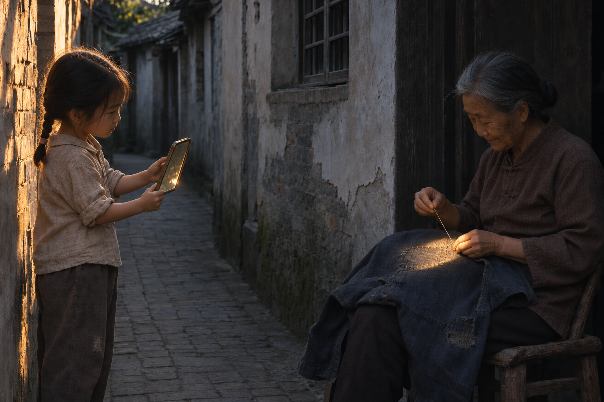

巷子里的最后一束晚光，被女孩用小镜子借给了老人手里的针线。一个安静的动作，让缝补处重新亮起来。

打开媒体文件 · 下载源码与提示词 · 来源与验证
ChatGPT 内置图像生成与编辑
1536 × 1024 PNG，字节数与 SHA-256 已核。1 次新生成、1 次定向编辑；已目视检查。当前为待用户审定的候选作品，不是用户精选。画面人物与场景均为虚构，非纪实摄影；未进行物理光路验证。
自拟场景与提示词，未输入外部参考图。编辑输入为本作品首版生成图。原创不表示全网唯一或已完成相似性、版权排查；公开复用许可尚未选定。